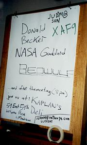

"Linux Gazette...making Linux just a little more fun!"
From Word Processors to Super Computers
Donald Becker Speaks about Beowulf at NYLUG



Editor's note: In the
original article on Adler's website, many of the
inline images display a larger copy of themselves when clicked on. These
larger images are not included in the Linux Gazette version, to
keep the total size of the Gazette small.
I got an e-mail over the weekend announcing that Donald Becker would
be addressing the NYLUG on May 19th. That's the New York Linux users
group for those of you out west. From out here on Long Island, NYC is
a long way away. But I figured I would rough out the commute into NYC
to catch what Donald had to say about his Beowulf project. Actually,
if you can keep a secret, I'll admit to having fun writing up my
encounters with Internet luminaries like Donald and publishing them on
the Internet. This would give me a chance to do so once again, so the
long commute into NYC didn't seem so bad.
A rainy day in New York City, and I'm hustling around looking for a
parking lot.
|
|
Wednesday came flying along, I spent most of the afternoon beating up
on an alpha personal workstation 433au, trying to get Linux installed
on it. Hey, Red Hat 6.0 was out and since they have a generic kernel
which seems to run on all Alpha variants, I figured this should be a
snap. Wrong! For some reason, MILO refuses to boot up on the
machine. I've been trying off and on to get alpha/Linux installed on
this machine since January. It belongs to a professor at Stony Brook
who is a real Linux enthusiast, and started down the path of the Linux
install, and ran into this MILO problem. I gave it a try, a graduate
student from Columbia gave it a try, and we have all failed. The Relativistic Heavy Ion
Collider is coming on line soon so we don't have much time to
spend on this box. It has become somewhat like King Author's
sword. Who ever can pull that sword out of the rock, or install Linux
on that machine, will lead a blessed life... Roy, (The professor who
owns the Alpha) has now put up a reward for who ever can get Linux
installed on the damn thing. The reward right now stands at 2 tickets
to see the NY Yanks. (Or Knicks if you are of that persuasion...)
Gucci bags and Rolex watches for sale abound. Where are the damn
umbrella sellers!

|
Time flies when you are having trouble getting Linux installed on
something, as it did that Wednesday afternoon. I ended up missing the
4:05pm train into Penn Station and decided to drive in. To my dismay,
it would have taken just as long to wait for the next train, as it
would have to drive in. Rain poured out of the sky as I topped 20MPH
speeds on the Long Island Expressway heading west into Manhattan. I
wanted to get to the meeting in time to be able to meet Donald and the
rest of the NYLUG members. That was just not going to happen. At this
rate, I would be lucky to get to hear him speak at all.
It's 6:20pm and I'm heading up 3rd Ave in search of a parking lot. The
meeting starts at 6:30pm. Damn, I'm always running just on time. With
little effort, I was able to find a very reasonable parking lot which
charged $10 'till closing. It's usually about $25 for a mid town
parking lot. I dropped the car off, and dash out in search of the IBM
building where the NYLUG was meeting. Rain is coming down, I'm getting
soaked, and I'm looking all over the place for those street vendors
who always have what you don't need at the time. Fake Rolex watches
were up for sale, as were Gucci bags, but no umbrellas. I could feel
the rain starting to seep onto my scalp as I ran across Madison,
heading north towards 57 St.
IBM, a while back, started to get a clue about the benefits of Open
Source/Free software and has now donated one of their meeting rooms
for the NYLUG, who meet about once a month. (Rasterman is talking at
the next one.) The IBM building stands very tall on the corner of 57th
and Madison. It boasts some modern work of some sort at its entrance.
One needs to sign in, in order to be let into the building. The
meeting was being held on the 9th floor.
I arrive to the meeting room where NYLUG is gathered. A projector is
setup with Donald's laptop plugged into it. There are about 30 or 40
people present. Jim Gleason, the organizer of the meeting, who works
for VA Research, is there talking with Donald, looking rather
busy. He sees me and introduces me to Donald. I have just drove in
through about 2.5 hours of LIE traffic, dashed across several streets
and avenues under the rain, and my bladder had been screaming at me
since exit 40 on the LIE that it needed to be relieved. I couldn't
concentrate much on what I was saying at the time. I shook hands with
Donald, and muttered something like, "We use lots of computers at
BNL". I don't remember how he responded, I think he didn't say
anything. I then managed to get myself away, find a seat, store my
laptop and look for a good place to take a photo of the room.
A shot of the NYLUG meeting room, courtesy of IBM. By the time Donald's
talk was well underway, there was basically standing room only.

|
Jim Gleason took the mike, and called on people to sit down. He wanted
to get the meeting going on time, (it was getting close to 7pm by
now). I settled down into my seat, booted my laptop, and proceeded to
ignore my aching bladder. I had more important business to take care
at the time.
A solemn moment for Jim Gleason, the VA Research guy who is one of the
NYLUG contacts and organizers. Actually, the shot was taken as he
happened to look down at his notes. The only time he did so during his
introduction. Murphy's law is at work here. Jim is a very energetic
guy who is excited about his work.

|
At this point, I started to take notes, as Donald start talking. Since
my notes are always rather jumbled, it will be easer to me to cover in
broad stokes the topics he talked about instead of trying to give a
word by word reproduction of what he said.
His introductory slide showed two things. His affiliation with the NASA
Goddard Space Center and a company called Scyld Computing
Corporation. My guess is that he has been given the liberty at NASA to
work with this Scyld startup to help bring the Beowulf into the
private sector. Good for him. At this point, something rather annoying
started to happen. The projector which was hooked up to Donald's
laptop, started to lose sync with it. Donald, who has a bit of
shyness to himself, was having a hard time giving his talk while at
the same time, pressing various auto sync buttons on the projector to
try and get his transparencies back up on the screen. This went on
through his talk. It really didn't matter since he didn't bother to
walk through his slides, rather he just talked from the top of his
head about what he as been doing for that past 7 years.
Donald's talk went on until 8:20pm. During that time I got the
following out of his talk.
A bad picture of Donald at the beginning of his talk. It looks like my
camera is getting out of sync with the fabric of space-time. (One of these
day's I'm going to upgrade my analog camera to a digital one. But with
the increase in property taxes out on Long Island and the small salary
a "junior" scientist makes at BNL, it will be some time be for I do so.)

|
He introduced the concept of a Beowulf system. Basically, it is a
cluster of many, off-the-shelf PC's, running Linux, and tied together
through a high speed, low latency networking infrastructure. The
network topology of this system tends to be a flat one which makes it
easier on the application side. Fast Ethernet, tied through a fast
Ethernet switch is the current network hardware of choice for a
Beowulf cluster. ATM is too expensive at this point and I believe he
mentioned that the latency tends to be greater than with fast
Ethernet. (But don't hold me to that statement.) He did mention that
the ATM "overhead" was way too large. After the talk was
over, one of the questions from someone in the audience revealed that
Beowulf is basically a library of software which one uses to help
implement a distributed application. This includes facilities such as
providing a global PID, methods of remote execution of processes, much
like rsh, etc. There was some mention of mpi/vpm (and mpiII) which are
parallel processing abstractions sitting above the Beowulf
distributed processing layer. One of the tasks on my list is to
clearly learn about this software, but unfortunately, Donald's talk was
not a HOWTO on using Beowulf to parallelize your application. It was
more like, "I've worked on Beowulf, and here are some interesting
things about it...". So, the specifics of Beowulf still elude me.
Donald talked a bit about the open source nature of the project. In
short, being an open source project was crucial in making it as
reliable as it is. This also holds for the Linux kernel itself. While
working on building Beowulf clusters, Donald ran across some problems
with the Linux kernel which he had to fix. Things like only being able
to mount 64 file systems got in his way. Having hundreds of PC's
talking to each other on the network stressed the networking data
structures in the Kernel which he also had to deal with. Being that he
had the source code to the kernel he was able to make the Beowulf
project work. He also took in contributions from outsiders. If the
contributed software was of relevance and worked well, he would
include it.
The side of the IBM building, as I face Madison Ave. Thank you IBM for
letting the NYLUG use your meeting rooms so that we can hear Donald
speak. Although it would be nice if you guys got a Linux friendly
projector. Its OK if the projector is not Y2K certified. We'll take it
any way.

|
Donald spoke a bit about the history of his project. His first cluster
was made up of 100MHz DX4Somethings (DX486?). (Due to the projector not
being able to sync properly to Donald's PC, I could only read part of
the slides. You have to give credit to the IBM folk though. The
projector was certified as being Y2K compliant. It had a rather
official looking sticker on its side saying so...) In 1996, a 2.2
GF/sec cluster was built, followed by a 10GF/sec system in 1997. This
was a threshold crossing system. NASA considered 10GF/sec to be the
minimum computing power for a system to be called a "super
computer". In 1998, a 40+GF/sec system was put together, (at Los
Alamos National Laboratory I believe.) What made all this possible was
the fact that price per performance was gaining rather rapidly for PC
based machines. The threshold was crossed between 1996/1997 making the
Beowulf type system competitive with the big Cray type systems. The
Beowulf project crossed another watershed when a Beowulf system won
the Gordon Bell prize for $/performance. (I believe this was around
1997.) The NASA Goddard Space Center at the time had a "Super
Computer" in its basement, called the T3D I believe. It was a 10GF/sec
machine. Donald was able, through open source software, a good network
and cheap PC's, in essence beat it.
Donald spent some time showing pictures of current Beowulf clusters in
operation. Some were rack mounted systems, some were bunches of PC's
on a shelfs. The PC's on shelfs Beowulf system is called LOBOS which
stands for Lots of Boxes on Shelves. One of the systems built in the 19
inch racks was called the hive due to the noise the large cabinet
fans made.
The art work standing at the entrance to the IBM
building. Unfortunately, I can't tell the difference between this and a
bunch of steel beams welded together.

|
Some applications which are currently using Beowulf systems are
climate modeling, ray tracing and galaxy evolution modeling. He was
particularly intrigued with the galaxy evolution modeling
application. In order to model a galaxy, you need to have every star
in the galaxy, interact with every other star in the galaxy. Gravity's
force is felt at infinite distances. One would think that this kind of
find grained application would not work well on a network distributed
system. But the guys at Los Alamos, came up with a tree structured
algorithm which mapped very well onto a network topology, thus making
a Beowulf architecture work for this type of computing problem. NASA
uses the Beowulfs for image processing of satellite and Hubble
images. The Hubble images had to be refocused because of the "over
site" of one of the mirror polishers. One application of satellite
image processing is to splice together all the satellite photos taken
from various angles and positions of one area on earth, to form one
large coherent image.
Some of the specifics about Beowulf clusters he mentioned were the
following. Usually one of the nodes is set aside and dedicated to
managing the rest of the nodes in the cluster. It's the job
distributor. Some very simple techniques are used to keep track of
which systems have not crashed. A multicast coming from each machine
is received by the controlling node or it pings the rest of the
nodes in the cluster. If one of the nodes goes down, the controller
quits submitting jobs to it. There are some mechanisms within the
Beowulf software for process migration from one node to another. He
also talked about how he uses RPM extensively to maintain the software
on the nodes. He referred to RPM as a "key technology" enabling the
easy maintainability, software wise, of large clusters of PC's. A
question came up asking about how he maintains his Beowulf code. He
didn't answer the question very well. He didn't really want to answer
the question since he did not want to endorse any kind of source code
management software like rcs or cvs. But he did stress that RPM was
key in order to be able to distribute software to may PC's.
Who's that imposter! (I've gotta' upgrade that damn camera...)

|
He also talked about the stability of the machines he works with. Most
of his systems had been up for over a 100 days. I believe some of the
Beowulf clusters had been up for over 200 days. What is important is
not that a single machine has been up that long, but that large
numbers of machines have been up and running for that amount of
time. Because of the long running nature of a Beowulf cluster, one
tends not to use the latest and greatest software release of
anything. He was using a 2.0.3x version of Linux on his machines. He
also pointed out a critical feature of having the source code
available for the kernel and all the software which makes up a Beowulf
system. If there is a bug found, then one can fix it by modifying a
few lines of code. That one module or program gets recompiled and you're
off and running again, with a minimum amount of administrative
work. If one works with closed source systems, it is often the case
that when a similar small bug is found and fixed, a whole cascade of
software upgrades result. This is due to the fact that the bug fix
will come in the form of a new software release. This release then
upgrades your shared libraries. The shared library upgrades then force
you to upgrade all your applications and on and on. After which you
are then forced into revalidating your whole cluster for production
use. Something which can take a long time. Donald mentioned
that he validates his systems by running Linux kernel compilations for
two days to "burn in" his systems.
Donald also spent some time talking about how one runs a
Beowulf cluster and keeps it reliable. This is done by monitoring the
hardware for possible future failures. The most common one is due to
failing fans. There seems to be a host of applications which monitor
system performance, from the temperature of the boxes, to network
packet error checking. Keeping an eye on these problems helps keep a
Beowulf cluster healthy.
Donald answering questions after his talk. I nice shot of his left
back side.

|
One last thing worth mentioning. With all this talk of running Linux
systems for 100's of days on end, a Windows "story" came up. It turns
out that there is a bug in the timer software for Windows. It will
cause your PC to crash in 49 days. This bug was just recently found
and has been around for a long time. Since a Windows system rarely
stays up for that long, its has only been until recently that this bug
has been found.
One person in the audience asked why Donald used Linux as the kernel
for building up his Beowulf project instead of one of the BSD
kernels. Donald had an interesting answer to that question. First off,
the BSD kernels were not as stable as Linux, back when he started
working on his project. He then proceeded to complain that working
with the BSD developers was very difficult. They tend to hide the
development process thus making it harder to contribute the needed
upgrades. (Remember that Donald had to work with the internal data
structures of the kernel in order to make his project scale.) He then
said that these BSD developers had very large egos. "Their ego's would
fill this room" he said, thus implying the difficulty of working with
them. He then went on to say that he was quite able to work with
Linus. Linus was a laid back guy.
Another shot of Donald left backside. Although I'm starting to work
around towards his front. If I'm lucky I may get him looking into the camera.

|
There were many other interesting questions which were discussed
during Donald's talk. You can read my jumbled notes if you care to try and
decipher them for more information.
Well, that's as far forward as I could get. Although I did get a nice
shot of him and his book which I proudly display at the top of
this write up.

|
The session came to an end about 8:20pm. During his session he plugged
his
new book about Beowulf clusters titled How to Build a
Beowulf. The book was written in collaboration with several of the
Beowulf developers and is a compilation of a lot of the tutorials and
documentation on the software. It's published by MIT Press and fits in
with the other "definitive" references to mpi, mpiII and pvm also
published by MIT Press. He said that he makes about 30 cents per book
sold and was counting up the number of people in the audience to see
if he could buy dinner with the proceeds if every one bought one. One
guy in the audience offered him 60 cents for the book he had in his
hand, doubling his take home profit. Donald declined the offer.
People got up and started to leave the room after the talk was over. I
stuck around to take some pictures of Donald as he talked to some
NYLUGers. I eventually was able to get a chance to re-introduce myself
to him. I have him my card and invited him out to BNL if he were ever
in the area again. (I'm really bad at this sort of thing.) I then
asked him if he had trouble getting funding for his first Beowulf
system. He told me that he got the Beowulf idea back when he was
working for the NSA. He presented the idea to his superiors. He needed
$50K to put a cluster of nodes to together. For the NSA, $50K just too
little to bother with and his request was declined. So he took his
idea over to NASA. NASA thought it was worth funding, so he got a job
there specifically to work on his Beowulf idea. The rest, as they say,
is history.
My last shot of Donald as we start receiving our dinner orders. I was
fortuitous enough to take this shot just as the waiter held Donald's
plate right over his mouth. It is truly amazing how often Murphy's law
kicks in. The guy looking right into the camera is named Judd. He
works for Netscape and announced at the NYLUG meeting an install fest
he was organizing.

|
I left the room and spent some time with Jim Gleason in the hallway
just outside. VA Research is about to deliver a 36 node system to BNL
this coming week and we talked about that a bit. Suddenly, my
bladder screamed at me and I broke off in mid sentence, "Where's the
men's room!". To my fortune, it was about 10 feet behind me. I don't
know how I was able to ignore my bodily functions from exit 40 of the
LIE until now...
A picture of the other table where the 2nd half of the NYLUGers hung
out while waiting for their food to show up.

|
A small fraction of the group then headed over to Kapland's deli for a
real NYC deli meal. I ordered an extra lean pastrami sandwich. In
typical NY deli fashion, I was delivered just that, a mountain of
extra lean pastrami sandwiched between two thin slices of rye bread;
nothing else. The pickles and cole slaw were delivered on dishes as we
sat down. I had to manually apply the Russian dressing myself.
I sat across one guy who seemed to do business with wall street. One
tidbit which I found rather interesting was that he had this friend
who put systems together for wall street trading firms. One would
assume that these systems are bullet proof; 100% reliable. It turns
out that they crash all the time. There is enough redundancy in these
systems so that these crashes can be afforded. After hearing Donald
talk about large numbers of systems being up for 100's of days at a
time, and then hearing that wall street trading systems crash
continuously was a real shock. Maybe wall street will begin to
understand the power of Open Source. Until then, my retirement
fund will not be as safe as it could be.
Another shot of Jim Gleason along with Matthew Hunt and Ari. Ari is
the guy in the back who also works for VA Research. He's coming out to
BNL to setup the 36 node machine I'm aching to submit my jobs to. The
guy in the middle is Matthew Hunt, President of the Linux Users of NY
group (LUNY).

|
At about 9:30pm, Jim Gleason was getting worried about getting Donald
to JFK to catch his 11:30pm flight to NC. Donald was headed down to
attend the LinuxExpo. It was getting late for me as well. I said good bye
to the crowd of NYLUGers and headed out in search of that lot
where I parked my car. The drive back to where I live on Long Island
proceeded in standard form. After giving the MTA guy the $3.50 toll
for using the Midtown Tunnel, I start counting the exists along the
LI as I drive by them. 1, 2, ... 10, 11, ... 20, ..., 30...
Driving along on the LIE always leads my mind to wandering in
thought. This time, my mind wandered around open source land. I still
cannot get a grip on the power of the Internet. What really made
Donald's project possible was the fact that he had access to
Linux. You could never build a Beowulf cluster out of windows 3.1
machines. Think about it, this is what was running on those powerful
100MHz DX486 machines back when he started this project. I can imagine
going to one of the NSA administrators and trying to convince him that
you could take all those PC's the secretaries were using to write up
memos using MS Word, gang them together and turn them into a super
computer. And do so for only $50K. Back in 1992, that was a radical
idea! And look at what we have now, super computers popping up and the
beginning of a new industry. Also, has anyone ever heard of an NT
Beowulf cluster? I'm sure Micro Soft would boast of one if there was
one. (And take credit for the idea as well.) That would be a good way
to test the stability of NT. Run 100 NT machines in a cluster and see
how long you would keep them all up and running. It would be
nice to see Mindcraft perform such a feat. Having 100 Linux machines
running for over a hundred days translates to 10,000 cpu days of
continuous running. Benchmark that Mindcraft...
Exit number 67, exit number 68. Ahhh, exit 68, home at last.
Please e-mail me your comments, if
you have any. I'm always interested in what you may have to say
related to this write up or anything else on your mind.
Click
here if you want to read other articles I've published on the
Internet, or click
here to view my home page.
Copyright © 1999, Stephen Adler
Published in Issue 42 of Linux Gazette, June 1999
![[ TABLE OF CONTENTS ]](../gx/indexnew.gif)
![[ FRONT PAGE ]](../gx/homenew.gif)